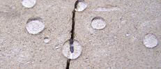
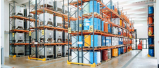

AKTUALNOŚCI
08.04.2014
Opinia konserwatorska ASP
Zakończono badania prowadzone przez Pracownie Chemii Konserwatorskiej ASP, obejmujące badanie właściwości impregnatów, odporności na zasolenia oraz mrozoodporności impregnowanych powierzchni. Impregnaty Dynasil® otrzymały pozytywną opinię do stosowania przy ochronie i renowacji obiektów zabytkowych.
Opinia ASP.pdf
02.02.2014
Nowa jakość impregnatów
ochronnych Dynasil® ST (silan + teflon)
CONSIL POLSKA opracowała nową grupę impregnatów produkowanych na bazie silanów i związków teflonu. Unikalna receptura pozwala uzyskać nieosiągalny do tej pory poziom ochrony powierzchni, jednocześnie przed wodą, olejami, mikroorganizmami.
01.02.2014
Dynasil® SMART Protect, Dynasil® Mineral.
Nowe impregnaty chroniące przed wodą olejami, nadające powierzchni silne właściwości samoczyszczące
TECHNOLOGIA - DYNASIL

Silany w ochronie budowli nadają sugstancji budowlanej nieosiagalną dotąd odporność i trwałość. Dzieje się to bez naruszenia funkcji i wyglądu zabezpieczonej powierzchni.
OFERTA HANDLOWA

Silany w ochronie budowli nadają sugstancji budowlanej nieosiagalną dotąd odporność i trwałość. Dzieje się to bez naruszenia funkcji i wyglądu zabezpieczonej powierzchni.
OBIEKTY REFERENCYJNE
Silany w ochronie budowli nadają sugstancji budowlanej nieosiagalną dotąd odporność i trwałość. Dzieje się to bez naruszenia funkcji i wyglądu zabezpieczonej powierzchni.
BADANIA SKUTECZNOŚCI
Silany w ochronie budowli nadają sugstancji budowlanej nieosiagalną dotąd odporność i trwałość. Dzieje się to bez naruszenia funkcji i wyglądu zabezpieczonej powierzchni.
FIRMA
Consil jest producentem specjalistycznych preparatów do impregnacji i renowacji materiałów budowlanych. Wydajność, skuteczność i trwałość to podstawowe cechy naszych produktów. Marka Consil gwarantuje najwyższą jakość wyrobów, kontrolowaną na każdym etapie produkcji, począwszy od odbioru surowców, aż po końcowy produkt.